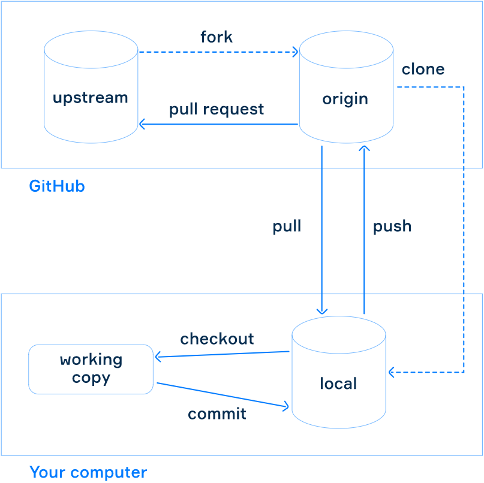
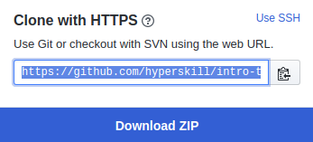

Imagine that you have a repository hosted on GitHub with a project that you are going to develop. It may be a forked repository or an original one, the point is that you have full access to it.
The standard approach to work with a project is to have a local copy of the repository and commit your changes to this copy rather than to a remote repo hosted on GitHub through the web interface. This local repository has full version history of the project that can be useful when working without an internet connection. After you've changed something in the local repo, you can push your changes to the remote repository to make them visible to other developers.
The picture below shows the model of how to work with GitHub.

First, consider the block related to GitHub. There are two repositories:
To implement changes from your fork to the original repo of the project, you need to make a pull request as we did before.
If you want to make small changes in your repo (fork), you can use the web interface of GitHub. However, this approach is not convenient when developing programs, because you often need to run and debug them locally. The standard way is to create a local clone of a remote repository and work with it locally, pushing changes to the remote repo from time to time.
Now you need to clone your fork (origin) of our educational repository on your computer. Find the Clone or download button within the repo and click it to show the address of the repository for cloning.
Open your command line or terminal and enter the directory where you want to copy the repository. Then write git
clone and insert the address:
$ git clone https://github.com/hyperskill/intro-to-github.git
Now, you have a local repository of the project.
Navigate to the directory of the repository and take a look at the content. The local repo includes all the files, branches, and commits history like the remote repository. Type this command to verify the state of your repo:
$ git status
On branch master
Your branch is up-to-date with 'origin/master'.Now your working copy is actually on the master branch of your local repo. And it is similar to the origin (fork) master branch. To make changes in your repo, first, you should create a branch to protect your master branch. Type the command below:
$ git branch edit-readmeAfter this command is executed, a new branch edit-readme is created, but you are still on the master branch. You may check it using status just like in the previous example.
To get another branch, use checkout with the branch name:
$ git checkout edit-readmeNow you are on the branch that you've created.
$ git status
On branch edit-readme
nothing to commit, working tree cleanWe are ready to make some changes on a new branch.
The basic workflow looks like this:
Modify the files in your working copy.
Select and stage changes you want to be a part of your next commit.
Perform a commit that includes your changes.
Let's make some changes then! Open the README.md file and write a few lines in it. Then check the status of
the repo again and you will see that the file has been changed. Now, stage these changes using add:
$ git add README.mdYou can commit these changes to your local repo with a descriptive comment:
$ git commit -m "Add information about local repository in readme file"You can make as many commits as you need. Changes can be different: adding new files, deleting, or modifying existing
ones. Do not forget to stage them using add before commit.
It is important to remember that commit adds changes only to your local repository. If you want to
propagate them to the origin repository on GitHub, you need to use push.
For the first time, you need to push your local branch as well because it does not exist in the remote repo.
$ git push --set-upstream origin edit-readmeThe next time it will be easier:
$ git pushTo get changes made by someone else, use pull:
$ git pullA nice thing to do is to execute pull periodically, especially before pushing, to prevent possible conflicts when someone else has changed the files in the repository in the same branch.
After pushing your branch with changes, you may find it on GitHub and create a Pull Request to the original (upstream) repo as we did it before.
There is another problem that we have not considered yet: someone may change the original repository while you are working in your fork and you need to synchronize your local and remote repositories with these changes. We will take a closer look at this problem in other topics.
For now, you need to remember what a local repository is and how to change files locally, and then propagate the changes to a remote repository hosted on GitHub. Although working with the command line with Git might seem difficult for beginners, don't worry. We will learn later how to perform the same commands in an easier way using a convenient user interface.